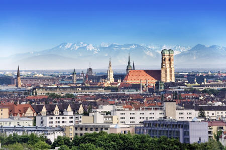

I am originally from Munich Germany...
... and I am now living in San Francisco USA.

My name is Christiane Kammerl and I moved to San Francisco in 2012. Before joining DBC, I worked as Account Manager at an international communications agency.
I like to be outdoors and very much enjoy hiking and sailing in the Bay Area.